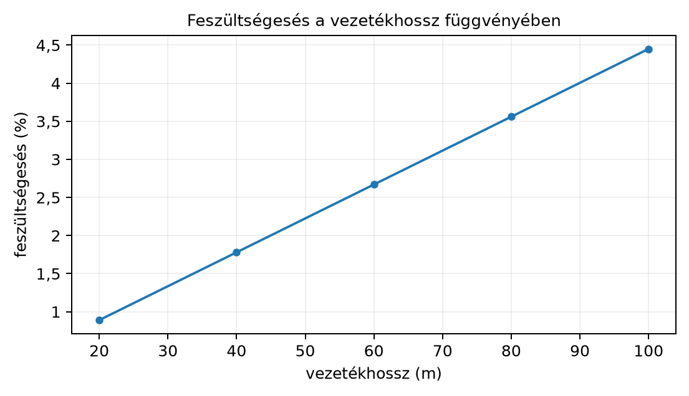

Statikus változat (mint a PDF-ben)
Amikor egy háromfázisú motort először kapcsolunk a hálózatra, két
dolgot mindig tudnunk kell:
– jó irányba fog-e forogni,
– és elég nagy feszültség jut-e a motor kapcsaira akkor is, amikor a
vezeték terhelt.
A forgásirány a fázissorrendtől függ, a kapocsfeszültség pedig a
vezetéken eső feszültségtől. Ezt a két témát kötjük most össze.
Képzeljünk el egy szivattyút. Ha a motor rossz irányba forog, a szivattyú nem szállít, sőt egyes típusok tömítése megsérülhet. Ha pedig a vezeték túl hosszú vagy túl vékony, a motor kisebb feszültséget kap, nagyobb áramot vesz fel, és a kioldása vagy a melegedése miatt leáll. A fázissorrend és a feszültségesés tehát nem „elméleti szépség”, hanem beüzemelési és méretezési alapkérdés.
A háromfázisú hálózat három fázisfeszültsége azonos nagyságú, de egymáshoz képest időben el van tolva. A feszültségek pillanatértékei:
Itt , , , .
Definíció. Fázissorrend a három fázisfeszültség időbeli csúcsainak sorrendje. Az sorrendet pozitív fázissorrendnek nevezzük; az sorrend a negatív (fordított) fázissorrend.
A gyakorlatban a sorrendet úgy is elképzelhetjük: ha az időtengelyen balról jobbra haladunk, az első pozitív csúcsot , a következőt , a harmadikat adja. Ez az 50 Hz-es rendszerben periódusidőn belül egyharmad időközönként következik be.
Egy kétpólusú, háromfázisú motor tekercsei a térben 120°-kal vannak eltolva. Ha rajtuk az időben szintén 120°-kal eltolt áramok folynak, az eredő mágneses mező nagysága állandó, iránya pedig forog.
Ez a jelenség a háromfázisú rendszer egyik legfontosabb építőköve: ezért tud a háromfázisú aszinkron motor külső segédberendezés nélkül elindulni. A motor működését a Szerkezet és működési elv, forgó mágneses mező alfejezet építi tovább.
Az ábra hat pillanatképén a vékony nyilak az egyes tekercsek mezőjét mutatják (hosszuk arányos a tekercs pillanatnyi áramával, negatív áramnál a nyíl a tengely ellentétes irányába mutat), a vastag nyíl az eredőt. Az eredő hossza minden pillanatban , és 60°-os időlépésenként 60°-ot fordul az óramutatóval ellentétes irányban: ez a forgó mező.
A térbeli és időbeli 120°-os eltolást a fázorábra mutatja:

Az ábrán a fázorok a pozitív fázissorrend szerint követik egymást: az óramutatóval ellentétesen forgó fázorcsillagban az után az (−120°), majd az (−240° = +120°) halad el a vízszintes tengely mellett. Ha az egyik fázor hossza például , akkor a hálózati vonali feszültség a fázorok különbségéből adódik: .
Szabály. A háromfázisú forgó mező forgásiránya a fázissorrendtől függ. Ha a motor kapcsaira sorrendben érkeznek a fázisok, a motor általában a típustáblán megjelölt irányba forog. Ha bármely két fázist felcserélünk, a forgó mező forgásiránya megfordul, így a motor is ellenkező irányba forog.
Miért működik ez? Ha és helyet cserél, a fázorok sorrendje az óramutató járásával megegyező irányból ellentétessé válik, vagy fordítva. A forgó mező iránya ezért mindig a fázisok bekötési sorrendjét tükrözi.
Továbbvitt eredmény. A forgó mező és a fázissorrend kapcsolatát használjuk a motor forgásirányának megállapításában, a fázissorrend-mutató értelmezésében, valamint a vezetékméretezés feszültségesés-számításában (Feszültségesés és a vezeték méretezése) és az aszinkron gép működési elvében (Szerkezet és működési elv, forgó mágneses mező).
A fázissorrend-mutató egy olyan kisméretű készülék, amely a három fázis bekötése után jelzi a forgó mező irányát. Három mérővezetékkel csatlakozik az pontokhoz, de nem kell tudnunk előre, hogy melyik fázis valójában melyik; a műszer jelzi, hogy a bekötött sorrend jobbra vagy balra forogna.
Biztonsági korlát. A fázissorrend-mutató használata hálózati feszültség alatti mérést igényel. Ezt csak jogosult, arra felhatalmazott személy végezheti, a hatályos előírások szerint. Tanuló önállóan ne mérjen 230/400 V-os hálózaton.
A mérés előtt ellenőrizni kell, hogy a műszer mérési kategóriája (CAT) megfelelő-e a mérési ponthoz, és a mérőzsinórok sértetlenek. A mérőcsúcsokat először a fázisokra kell csatlakoztatni, csak ezután szabad a műszert bekapcsolni; a jelzett forgásirányt fel kell jegyezni.
Interaktív ábra. A forgó mező fenti ábrájának HTML-változata a három fázisáram időfüggvényét és a forgó mezőt együtt mutatja. A barna (folytonos), fekete (szaggatott) és szürke (pontvonalas) görbe az áramát, a vastag nyíl az eredő mezőt jelzi; a szöghelyzet csúszkával vagy lejátszással léptethető. Az „L2–L3 csere” beállítással két fázis felcserélhető: a forgásirány azonnal megfordul. A frekvencia és a póluspárok száma alapján a lap kiírja a szinkron fordulatszámot (). A statikus ábra a pozitív sorrend hat pillanatképét mutatja.
A vezetéken minden terhelésnél feszültség esik. Ez azért fontos, mert a fogyasztó kapcsain a tápfeszültség így kisebb lesz, mint a hálózat üresjárati feszültsége. Az aszinkron motor nyomatéka (különösen az indító- és billenőnyomaték) nagyjából a kapocsfeszültség négyzetével arányos, ezért már 5–10 % feszültségcsökkenés is érezhető: a motor nehezebben indul, és azonos terhelésnél nagyobb áramot vesz fel, jobban melegszik.
Háromfázisú, szimmetrikus terhelésnél a vezeték egy fázisára eső feszültségesést számoljuk, majd átszámítjuk vonali szintre. A vezetéknek két összetevője van:
ahol és a vezeték hosszegységre eső ellenállása és reaktanciája (), a vezeték hossza (), és pedig a teljes vezeték ellenállása és reaktanciája ().
Összefüggés. Háromfázisú szimmetrikus terhelés feszültségesése:
ahol a vonali áram, a fogyasztó teljesítménytényezője, és pedig egy fázis vezetékének eredő ellenállása és reaktanciája. Az eredmény feszültségesés voltban, a vonali feszültséghez viszonyítva.
A százalékos feszültségesés:
ahol , a hálózat névleges vonali feszültsége.
Ha a vezeték reaktanciája elhanyagolható – például kis keresztmetszetű kábelnél vagy rövid szakaszon – a képlet egyszerűbb:
Mivel , ahol a vezetékhossz méterben, a vezető fajlagos vezetőképessége (), a keresztmetszet (), a feszültségesés:
A réz értéke szobahőmérsékleten megközelítőleg , az alumíniumé kb. (ellenőrizendő: üzemi hőmérsékleten a pontos érték a kábel adatlapjából származik).
Adott: háromfázisú,
,
,
,
rézkábel,
,
.
Keresett: a feszültségesés
és a százalékos érték
.
Képlet:
Behelyettesítés:
A nevező:
,
a számláló:
.
Százalékban:
Ellenőrzés: a 25 m-es, 2,5 mm²-es kábelen 16 A terhelésnél a feszültségesés kicsi, kb. 1 %, ami egy fogyasztói áramkörre megfelelő. A nagyságrend reális.
Hosszabb kábelnél vagy nagyobb keresztmetszetnél a reaktanciát sem szabad elhanyagolni.
Adott: háromfázisú,
,
,
tehát
,
,
kábel hosszegységre eső ellenállása
,
reaktanciája
(ellenőrizendő: a kábel gyártói adatlapja szerint).
Keresett: a feszültségesés
és
.
Képlet:
Behelyettesítés:
Százalékban:
Ellenőrzés: A 100 A-es, 250 m hosszú kábelen a feszültségesés megközelíti a 4 %-ot. Ez világítási áramkörben már túl nagy lehet, motoros fogyasztónál pedig a kapocsfeszültség csökkenését jelzi. A számításból az is látszik, hogy a vezeték ellenállása , reaktanciája ; a feszültségesésben az mellett az tag kb. -ot ad, tehát a reaktancia nem elhanyagolható.

A diagram jól mutatja, hogy azonos áram és keresztmetszet mellett a feszültségesés a hossz növelésével arányosan nő. Ezért hosszú kábelnél nem elég „vastagabb kábelt választani”, hanem ki kell számolni a feszültségesést is.
Szabvány. A kisfeszültségű berendezések méretezésénél a feszültségesésre a szabvány ajánlott határértékeket ad. Általában világítási áramköröknél 3 %, egyéb fogyasztói áramköröknél 5 % a szokásos tervezési határ (ellenőrizendő: az aktuális MSZ HD 60364-5-52 szerinti nemzeti előírás). A pontos értékek a berendezés jellegétől és a hálózati engedélyes feltételeitől is függnek.
A gyakorlatban a feszültségesés számítása nem csak a vezeték hosszán múlik. A teljes hurokban a transzformátortól a fogyasztó kapcsaiig több vezetékszakasz is sorba kapcsolódik, ezért a tervezéskor a csatlakozási ponttól számított leghosszabb áramkört vizsgáljuk.
Szivattyúmotor rossz forgásiránya. Egy mezőgazdasági telepen háromfázisú szivattyúmotort szereltek be. A motor beindult, de a szivattyú nem szállított vizet. A szerelő először a szivattyúra gyanakodott, pedig a motor forgásiránya volt fordított. Fázissorrend-mutatóval ellenőrizték a betáplálást, és megállapították, hogy az elosztóban két fázis fel volt cserélve. Két fázis megcserélése után a szivattyú azonnal megfelelően működött. A tanulság: háromfázisú motor beüzemelésekor mindig ellenőrizni kell a forgásirányt, és ha a gép forgásiránya hibás, elég két fázist felcserélni.
Hosszú kábel okozta feszültségcsökkenés. Egy udvari világítási oszlophoz 4 mm²-es kábelt húztak, de a fényforrások tompán világítottak. A számítás megmutatta, hogy a 150 m hosszú kábelen a feszültségesés meghaladta a 6 %-ot, mert a terhelést és a hossz közös hatásával nem számoltak. (Ha emellett a megszakító is melegedett, az külön okra, például laza kötésre utal, nem a feszültségesésre.) A javítás a keresztmetszet növelése volt; ezzel a feszültségesés 3 % alá csökkent. Az eset arra figyelmeztet, hogy a hossz növelésekor nem elég a terhelhetőséget nézni, a feszültségesést is ellenőrizni kell.
1. hiba – „Elég a vezeték terhelhetőségét
megnézni.”
A szerelő azt hiszi, ha a kábel áramterhelhetősége elég, a
feszültségesés is biztosan megfelel. Ez téves: hosszú áramkörnél a
feszültségesés gyakran hamarabb túllépi a határt, mint a terhelhetőség.
Helyes gyakorlat: mind a terhelhetőséget, mind a
feszültségesést számítani kell.
2. hiba – Az egy- és háromfázisú képlet
összekeverése.
Egyfázisú körben az áram a fázis- és a nullavezetőn is átfolyik, ezért
(a hurok hossza
),
a viszonyítási alap
.
Háromfázisú szimmetrikus terhelésnél a nullavezetőben nem folyik áram:
,
a viszonyítási alap
.
Aki a háromfázisú képletet egyfázisú körre alkalmazza (vagy fordítva),
rossz eredményt kap. Helyes gyakorlat: először döntsd
el a kör típusát, és ahhoz válaszd a képletet.
3. hiba – Két fázis felcserélését elfelejtik, vagy nem
jelölik be.
A motort rossz irányba kötik, majd megcserélnek két fázist, de nem
készítenek új jelölést. Később a hibakeresésnél a kábelerek jele és a
tényleges bekötés eltér. Helyes gyakorlat: a
fáziscserét dokumentálni kell, és a kapcsokon/feliratokon is jelölni,
hogy a bekötés szándékosan tér el a kábel eredeti jelölésétől.
4. hiba – A fázissorrend-mutatót éles hálózaton, védőeszköz
nélkül használják.
A hálózati feszültség közvetlen mérése áramütéses veszélyt jelent.
Helyes gyakorlat: csak jogosult végezheti, megfelelő
CAT besorolású műszerrel, sérülésmentes zsinórokkal.
1. Igaz vagy hamis? A pozitív fázissorrend mindig
azt jelenti, hogy az
fázis feszültsége a legnagyobb.
2. Melyik két fázist kell felcserélni ahhoz, hogy a
háromfázisú motor forgásiránya megforduljon?
3. Egy háromfázisú, 25 m hosszú, 2,5 mm²-es rézkábelen
16 A folyik,
.
Mekkora a feszültségesés közelítőleg?
4. Miért nő a feszültségesés, ha a terhelés
teljesítménytényezője csökken – azonos hatásos teljesítmény
mellett?
5. Mi a fázissorrend-mutató szerepe, és miért kell
előtte vizsgálni a műszer CAT besorolását?
6. Melyik képlet adja a háromfázisú feszültségesést, ha
a reaktancia elhanyagolható?
A válaszok a szakasz végén, a Feladatok után találhatók.
1. feladat (A)
Rajzolja le a három fázisfeszültség fázorait, és írja fel az
időfüggvényeket
,
mellett, pozitív fázissorrendben.
2. feladat (A)
Egy háromfázisú motor forgásiránya rossz. Melyik két fázis cseréjét
javasolja? Magyarázza el, miért elegendő két fázist cserélni, és mi
történik a forgó mezővel.
3. feladat (B)
Egy háromfázisú kábelt
,
,
,
,
réz,
adatokkal terhelünk. A reaktanciát hanyagoljuk el. Számítsa ki a
feszültségesést voltban és százalékban.
4. feladat (B)
Egy hosszú, 200 m-es, 50 mm²-es rézkábelen
,
.
A kábel hosszegységre eső ellenállása
(),
reaktanciája
.
Számítsa ki a feszültségesést. Hasonlítsa össze azzal az esettel, amikor
a reaktanciát elhanyagoljuk.
5. feladat (C)
Egy szivattyúmotor 80 m-re van az elosztótól. A motor névleges árama 22
A, indítási árama a névleges hatszorosa, indításkor cosφ ≈ 0,5
(induktív), a kábel 2,5 mm²-es réz. Indításkor a feszültségesés
meghaladhatja-e a 10 %-ot? Számoljon az egyszerű, ellenállásos
képlettel, és értelmezze az eredményt. Ezután javasoljon megoldást a
feszültségesés csökkentésére.
6. feladat (D)
Egy háromfázisú, feszültség alatt álló elosztóban fázissorrend-mutatóval
azt mérik, hogy a forgó mező
irányú. A mérést jogosult személy végzi. A szivattyúmotor a jelenlegi
bekötésben rossz irányba forog. Melyik két fázist cseréli meg, és hogyan
ellenőrzi a cserét? A munkát természetesen feszültségmentesítés után
végezze.
1. válasz. Hamis. A fázissorrend a fázisok időbeli sorrendjét jelenti, nem azt, hogy melyik feszültsége nagyobb. A három feszültség pillanatértéke folyamatosan változik; a csúcsok sorrendje a lényeg.
2. válasz. Bármely két fázist, pl. -t és -at, fel kell cserélni. Ekkor a fázorok sorrendje megfordul, és a forgó mező iránya is megfordul.
3. válasz. , azaz kb. 1,11 %.
4. válasz. Azonos hatásos teljesítményhez kisebb teljesítménytényező mellett nagyobb áram kell: . Ezért nő. Azonos áram mellett viszont kis keresztmetszetnél a feszültségesés kisebb lesz (); nagy keresztmetszetű, induktív reaktanciájú kábelnél az tag miatt nőhet.
5. válasz. A fázissorrend-mutató a három fázis bekötése után jelzi a forgó mező irányát. A CAT besorolás azt mutatja, mekkora hálózati túlfeszültségnek állhat ellen a műszer mérés közben. Alacsony CAT besorolású műszer elosztóban életveszélyes lehet.
6. válasz. .
1. feladat megoldása.
Az időfüggvények:
A fázorábra a fenti fázorábrának felel meg: az fázor vízszintes, az 120°-kal az óramutató járásával megegyezően (−120°), az 240°-kal (−240° = +120°) elforgatva, azonos hosszúságú. Az időfüggvényekben a csúcsok sorrendje: , majd , majd .
2. feladat megoldása.
Két fázist, például
és
felcserélünk. Ekkor a fázorok sorrendje
lesz, ami a forgó mező forgásirányát megfordítja. Több fázist nem kell
cserélni, mert a fázissorrend megfordításához elég két fázis helyet
cseréljen. A motor forgásiránya a fázissorrendtől függ, ezért ugyanaz a
motor ellenkező irányba forog.
3. feladat megoldása.
Adott:
,
,
,
,
.
Képlet:
Behelyettesítés:
A nevező:
,
a számláló:
.
Százalékban:
Ez a 3–5 %-os sávban van, motoros fogyasztónál általában elfogadható, de világításnál már határeset.
4. feladat megoldása.
Adott:
,
,
,
,
,
.
Képlet:
Behelyettesítés:
Ha a reaktanciát elhanyagoljuk:
A különbség kb. 0,83 V (a a kb. -a). Ekkora keresztmetszetnél a reaktancia már mérhető hatású; kis keresztmetszetnél (pl. , ) az ellenállás uralkodik, és a reaktancia hatása elhanyagolható. A 50 A terhelhetőségét külön kell ellenőrizni (ellenőrizendő: MSZ HD 60364-5-52 táblázat).
5. feladat megoldása.
Adott:
,
,
,
,
,
.
Az egyszerű képlet az indítási árammal:
Százalékban:
Ez meghaladja a -ot. Lehetséges beavatkozások: nagyobb keresztmetszet (-rel , ), lágyindító vagy csillag–delta indítás (az indítási áram kb. harmadára csökken: -en ), a motor közelebbi csatlakoztatása. Ezen felül az üzemi feszültségesést is ellenőrizni kell (, esetén , ), és a a -es kábel terhelhetőségi szempontból határeset (ellenőrizendő: MSZ HD 60364-5-52).
6. feladat megoldása.
A mért
sorrend negatív. Ha a motor jelenleg rossz irányba forog, akkor a mért
negatív sorrendet kell pozitívra cserélni. Ehhez ismét két fázist
cserélünk, például
-at
és
-t.
A munkát feszültségmentesítés után végezzük: lekapcsolás,
visszakapcsolás elleni biztosítás, feszültségmentesség ellenőrzése,
földelés és rövidre zárás, ha szükséges, szomszédos részek lefedése. A
csere után a motor beindul, és a forgásirányt ellenőrizzük – vagy
fázissorrend-mutatóval, vagy a motor forgásirányának
szemrevételezésével.
A háromfázisú hálózat feszültségei azonos nagyságú, egymáshoz képest 120°-kal eltolt fázorok. A pozitív fázissorrend , a negatív . A forgó mágneses mező a térben 120°-kal eltolt tekercseken az időben 120°-kal eltolt áramok hatására jön létre; iránya a fázissorrendet követi. Két fázis felcserélése megfordítja a forgó mezőt, tehát a motor forgásirányát.
Háromfázisú szimmetrikus terhelés vezetéken fellépő feszültségesése:
ha és a fázisvezető ellenállása és reaktanciája, a vonali áram. A reaktancia elhanyagolásakor:
A százalékos feszültségesést adja. A gyakorlatban a feszültségesést a terhelhetőség mellett mindig ellenőrizni kell, mert hosszú kábelnél a feszültségesés gyakran hamarabb túllép a megengedett értéken, mint a kábel terhelhetősége. A fázissorrend-mutató használata hálózati feszültség alatt csak jogosult személynek engedélyezett, megfelelő CAT besorolású műszerrel.
Továbbvitt eredmény. A forgó mező fogalma és a fázissorrend szerepe a motorok bekötésénél és a feszültségesés méretezésénél is alapvető. Ezt a tudást használjuk a Feszültségesés és a vezeték méretezése és a Szerkezet és működési elv, forgó mágneses mező alfejezetben.
Nincs felhasznált, olvasott forrás. A feszültségesés határértékei és a kábel hosszegységre eső ellenállás-/reaktanciaértékei tájékoztató jellegűek; a tényleges méretezéshez a hatályos szabványt és a gyártói adatlapot kell ellenőrizni.